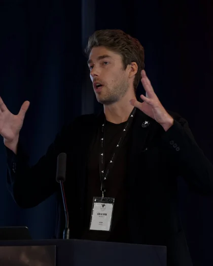
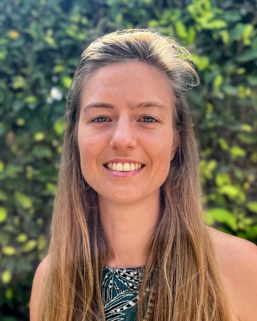
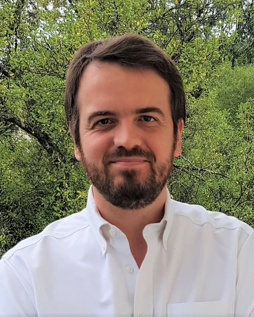
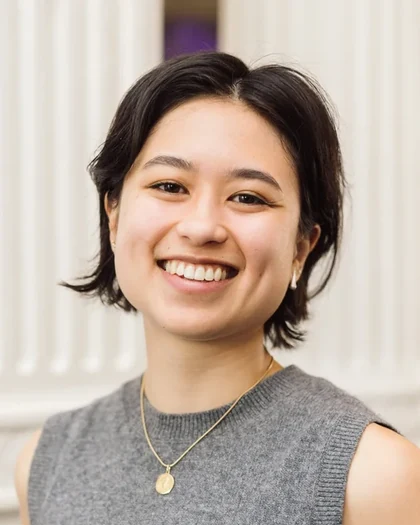
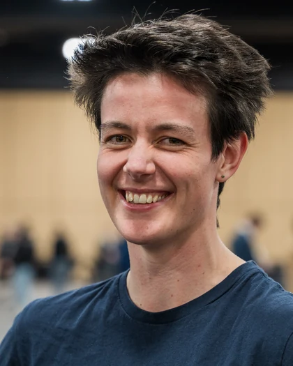
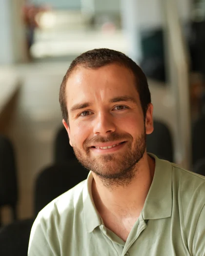
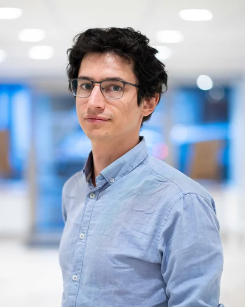

Join us at the first ever Effective Altruism Summit in Switzerland, on 24 October 2026
Applications are now closed
New to effective altruism?This one-day event brings people together around effective altruism, a growing global movement dedicated to doing good more effectively. Geneva is a city built on international cooperation, and this summit is for people here who want to think deeply about how to do the most good with the resources they have. You'll hear from inspiring speakers who have built their careers around that question, and leave motivated by the ideas and the community you've connected with.
- Date
- Saturday, 24 October 2026
- Venue
- Crowne Plaza Geneva, next to Geneva Airport
- Format
- 09:30–19:00 · One day · In English
Who is this event for
For professionals with a policy-related, international background.
No prior EA exposure needed.
This event might be especially useful for:
Professionals in global health and development, humanitarian response, biosecurity, AI, animal welfare, or related fields, interested in using their skills to address some of the world's most pressing problems.
Researchers and academics working on policy-relevant questions excited about applying critical thinking to complex social problems.
People already working in effective altruism related roles that are interested in networking and providing mentorship during the conference, or in supporting regional efforts.
Recent graduates or final-year students in international relations, public health, development, law, or a related field, who want to start building the connections and thinking that will shape their career.
Speakers
The people you'll hear from
Updated every week
-
Melissa Parke
Executive Director, International Campaign to Abolish Nuclear Weapons (ICAN)
The Hon. Melissa Parke was appointed as the Executive Director of the International Campaign to Abolish Nuclear Weapons (ICAN) on 1 September 2023. Ms Parke is a former Australian Minister for International Development, and former Australian federal Member of Parliament (2007 to 2016). Prior to being elected to the Australian Parliament, Ms Parke worked as an international lawyer with the United Nations in Kosovo, Gaza, New York and Lebanon (1999 to 2007). Ms Parke also served as a member of the UN Group of Eminent Experts on Yemen, mandated by the UN Human Rights Council to investigate violations of international human rights and humanitarian law during the conflict in Yemen (2017–2021).
-

Léo Le Ster
Principal Strategist, The Humane League
Léo Le Ster is the Principal Strategist for The Humane League, advising and training 80 member organisations of the Open Wing Alliance in 70 countries on their corporate campaigns, targeting major global food corporations to abolish extreme confinement and cruel practices in factory farming.
-

Sigrid De Lepeleire
Monitoring, Evaluation and Learning Manager, Lafiya
Sigrid De Lepeleire works as Monitoring, Evaluation and Learning Manager at Lafiya, which brings family planning counselling and contraceptive services to women in remote communities in Nigeria through a network of trained government health workers. Her work focuses on generating and using evidence to understand how the programme performs, where it can improve, and how it can make women with an unmet need for family planning more visible in national health data. Before joining Lafiya, she spent more than six years with the Belgian Red Cross, managing health and humanitarian programmes across Sub-Saharan Africa. Effective altruism led her to focus increasingly on monitoring and evaluation, and on using evidence to understand what actually makes a difference.
-

Loic Watine
Head of EA Funds, Centre for Effective Altruism
Loic works at the Centre for Effective Altruism (CEA), where he leads EA Funds, a portfolio of cause-area philanthropic funds that lets individual donors pool their giving and rely on subject-matter experts to identify and fund highly cost-effective projects. Current funds cover global health and development, risks from transformative AI, animal welfare, and EA community building. Prior to joining CEA, he spent 15 years at Innovations for Poverty Action (IPA), a research and policy organization in international development, most recently as its Chief Research and Policy Officer, overseeing IPA's Sector Programs, Policy team, and the Right-Fit Evidence Unit, a monitoring and evaluation advisory unit he founded.
-

Chiara Gerosa
Executive Director, Talos Network
Chiara Gerosa is Executive Director of Talos Network, which develops the people Europe needs to shape a resilient future with advanced AI. She joined Talos in 2024 as Fellowship Lead, training policymakers to govern frontier AI, and has led the organisation since 2025. Before that, she advised the UK government on online security and AI policy. She has also researched AI and security, and worked to strengthen collaboration between academia and policymakers in the UN system.
-

Hannah Betts
AI Governance Programme Lead, Talos Network
Hannah Betts is an AI Governance Programme Lead at Talos Network, where she co-leads the Policy Leaders Programme, a fellowship for experienced professionals entering European AI governance. Her career focuses on supporting institutions, governments and civil society to govern advanced AI. She previously led special projects and managed business operations at FAR.AI. Hannah holds a Master of Science from Te Herenga Waka | Victoria University of Wellington, examining challenges faced by journalists covering AI in New Zealand.
-

Romain Barbe
Co-founder and Director, Mieux Donner
Romain Barbe co-founded Mieux Donner on the conviction that we can have far greater impact once we have the right information. He helps foundations, companies and individuals support effective organisations, using evidence and prioritisation to decide where the money goes. An INSA engineering graduate, he has worked in humanitarian aid in India, served as a French Navy officer, and built sustainable solutions at an electric bicycle startup. He pledged 10% of his income in 2023, translated 80,000 Hours' career guide into French in 2024, and founded Mieux Donner through the Charity Entrepreneurship incubator. He has spoken on effective giving before the French National Assembly.
-
Naoki Peter
President, Sentience
Naoki Peter is President of Sentience, a Swiss nonprofit working to improve the lives of animals through political and societal change. He has been active in the effective altruism community since 2015, in roles including volunteer, board member and IT contractor. Alongside his nonprofit work, Naoki teaches computer science at a high school in Zurich and previously worked as a software engineer.
-

Antonin Broi
Postdoctoral Researcher in Philosophy, University of Geneva
Antonin Broi is a postdoctoral researcher in philosophy at the University of Geneva. He has been active in the effective altruism movement for over ten years, including two years as President of EA France, where he continues to serve on the board. His research, grounded in ethics, focuses on the philosophical foundations of EA, well-being, and philanthropy.
-
Konrad Gerosa
Co-founder and Chief Strategy Officer, Simon Institute for Longterm Governance
Konrad Gerosa (formerly Seifert) is Chief Strategy Officer of the Simon Institute for Longterm Governance, which he co-founded in 2021. The Institute supports policymakers, diplomats and technical experts in fostering international cooperation on governing transformative technologies, particularly frontier AI. Konrad oversees its strategy, people and special projects. A social entrepreneur, he has built two nonprofits after leaving an undergraduate degree in international relations, and has designed and led dozens of retreats and workshops on topics from probabilistic thinking to group decision-making and social impact. He also co-runs Fractal Geneva.
Organisations
Organisations taking part
Updated every week
Program
The day runs 09:30–19:00 on Saturday,
24 October, in English
Registration and welcome coffee start at 09:30, and the first session begins at 10:00. Timings may still change slightly.
-
09:30–10:00
Registration & Welcome Coffee
-
10:00–10:50
Opening: Three People Who Changed Course
Erik Jentzen (EA Switzerland) opens the day. Sigrid De Lepeleire, Romain Barbe and Chiara Gerosa then share how they once asked whether their work could do more good, and what they did about it.
-
10:50–11:15
Coffee Break
-
11:15–11:50 · Talk
How Do You Actually Decide? Frameworks for Doing More Good
Loic Watine (EA Funds) uses worked examples to show how experienced grantmakers compare options on scale, neglectedness and tractability.
-
11:50–12:10 · Talk
Cause Impartiality: Looking for the Highest-Impact Causes in Practice
Antonin Broi (University of Geneva) on the mindset behind effective altruism, and what role effectiveness should play in your own giving.
-
12:15–13:30
Networking Lunch & Topic Tables
Vegan lunch, with topic tables hosted by mentors and organisations, each built around one question. Speed Meetings run in parallel: two eight-minute rounds of one-to-one conversations, with limited places.
-
13:30–13:55 · Conversation
“We’ve Been Lucky So Far”: Nuclear Weapons, AI, and Existential Risk
Melissa Parke, Executive Director of ICAN, on why nuclear weapons remain an existential threat, why we’ve relied on luck more than deterrence, how abolition could work, and why AI, from military integration to superintelligence, raises the stakes. Moderated by Isaia Gisler.
-
14:00–14:25 · Fireside chat
Shaping AI Policy: Where Policy Careers Meet AI Safety
With the Simon Institute for Longterm Governance, moderated by Marius Wenk (EA Switzerland): why AI governance matters for the coming decade, and how people with a policy background can shape it.
-
14:30–15:10 · Talk and Q&A
Changing What the World Eats: Animal Welfare and Corporate Campaigns
Léo Le Ster (The Humane League) and Naoki Peter (Sentience) on how campaigns targeting a handful of companies can change conditions for hundreds of millions of animals.
-
15:15–16:15
Org Fair & Coffee
Meet the organisations working on the problems discussed today. Every stall has one concrete action you can take on the spot. From 15:45, drop-in office hours run in parallel:
- Office Hours: Cause Prioritisation with Antonin Broi
- Office Hours: Effective Giving with Romain Barbe
- Office Hours: Animal Welfare with Léo Le Ster and Naoki Peter
-
16:15–16:55 · In parallel
Workshops
Places are limited.
- Career Workshop: Finding Your Path to Impact, with Hannah Betts (Talos Network)
- Health, Animals, AI or All Three? Build Your Giving Plan, with Romain Barbe (Mieux Donner) Say you have a little (or a lot of) money to give this year. How would you split it between global health, animals and emerging risks? Would you defer to a fund? Accept some risk? After a quick look at what the evidence says about giving, you discuss four ready-made giving portfolios with your table and write your own end-of-year plan (any amount counts).
-
17:00–17:30
Closing: What Will You Do on Monday?
Erik Jentzen, Sonja Rossmann and Andre Santos (EA Switzerland) bring the threads together with a short menu of concrete next steps.
-
17:30–18:00
Pledge Party
Join Giving What We Can and other pledgers to celebrate your commitment to effective giving! The pledge party will take place at the GWWC pledge booth.
-
17:30–19:00
Reception
Drinks and socialising to close the day, sponsored by Effective Altruism Switzerland and Anima International.
-
19:00 · End
Application process
Applications are now closed.
Thank you to everyone who applied. This is how our application process works:
-
Select your ticket and complete a short application (~5-15 minutes).
-
Our team will review your application and will be in touch with you within 10 working days.
-
You'll receive an email with our decision and more information. Your card is only charged if and when you're accepted.
Ticket pricing
Ticket options and what's included
We suggest a CHF 40 contribution to help cover event costs, but we don't want price to be a barrier, so we also include reduced-price options.
All tickets include access to the full programme, a vegan lunch, and refreshments.
If you require a free ticket, please email us to request it.
- SupporterCHF 40
- StandardCHF 20
- BasicCHF 10
Want to hear about future events?
Whether or not you can join us in October, subscribe to our newsletter to stay up to date on Effective Altruism events across Switzerland.
Subscribe to the newsletter →Contact us
Email us at conferences@effectivealtruism.ch with any comments, suggestions, or questions.